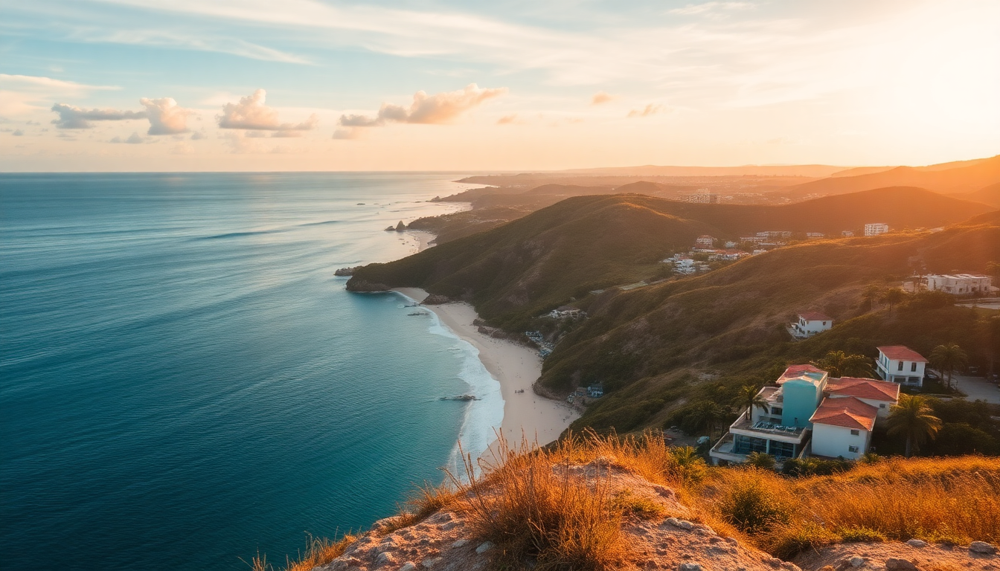

Best Time to Visit Cancun & Riviera Maya: Month Guide

I’ve been to the Riviera Maya four times now—twice in high season, once in the sticky summer, and once in early December that felt like a cheat code. The difference between a great trip and a frustrating one often comes down to timing. In this guide, I’ll walk you through each month so you can pick the window that fits your tolerance for crowds, heat, seaweed, and prices.
When is the best weather for Cancun and Riviera Maya?
For pure beach weather without sweating through your shirt by 10 a.m., aim for December through April. That’s the dry season. The sky stays a crisp blue, humidity drops, and the water is bath-warm. We spent a week in Playa del Carmen last March and didn’t see a single raindrop.
- December to February: Coolest months. Evenings in Tulum can dip to 18°C (64°F)—pack a light hoodie.
- March to April: Peak warmth. Expect 30°C (86°F) highs. Perfect for cenote hopping without freezing.
- May to October: Rainy season. Showers usually last an hour, then clear up. Humidity climbs.
The trade-off? Dry season is also high season. If you want perfect weather and don’t mind crowds, go in March.
Which months have the worst sargassum seaweed?
Sargassum has been a real problem since 2018. I learned this the hard way during a June trip to Tulum—the beach smelled like rotten eggs, and swimming was gross. The seaweed season runs roughly May through October, peaking in July and August.
- Best months for seaweed-free beaches: December through March. We swam at Playa Paraíso in Tulum last January—zero seaweed.
- Worst months: June through September. The resort side of Cancun’s Hotel Zone sometimes cleans it daily, but public beaches in Playa del Carmen get overwhelmed.
- Pro tip: If you must travel in summer, book a hotel with a pool or a beach club that rakes. Hotel Xcaret Mexico has a protected cove that stays clear.
Bottom line: if seaweed disgusts you, don’t come between May and October. I’d skip Tulum beaches entirely in August.
What are the crowds and prices like each month?
This is where you have to decide: do you want empty beaches or cheap flights? You rarely get both in the Riviera Maya.
- January to April: Peak season. Spring break (March) floods Cancun with college students. Hotel rates at Hyatt Ziva Cancun can hit $600 a night. Book six months out.
- May to June: Shoulder season. Crowds thin, prices drop 30–40%. We got a room at Aloft Playa del Carmen for $120 a night in late May.
- July to August: Summer break. Families everywhere. Xcaret Park and Xel-Há get packed by 9 a.m.
- September to October: Low season. Hurricane risk, but also the cheapest rates. Hotel Bardo Tulum dropped to $150 a night in October.
- November to December: Shoulder season leading into Christmas. November is my favorite—low crowds, good weather, no seaweed.
If you hate crowds, avoid March (spring break) and the week between Christmas and New Year’s. I made that mistake once—never again.
When is hurricane season, and should I worry?
Hurricane season officially runs June 1 to November 30, with the highest risk in September and October. I’ve been in Cancun during a tropical storm warning—it was mostly rain and wind for two days, then sun.
- Highest risk: September and October. Direct hits are rare (maybe one every few years), but you’ll get rain bands.
- Lower risk: June and July. Storms usually stay weak.
- Safest months: December through May. Zero hurricane threat.
If you book in September, always get travel insurance. I use SafetyWing—it’s cheap and covers weather cancellations. Also, stick to hotels with solid concrete construction in Cancun’s Hotel Zone or Playa del Carmen’s Playacar area—avoid flimsy cabanas in Tulum during this window.
What’s the best month for cenotes and ruins?
If your itinerary is heavy on archaeology and swimming holes, timing matters less for weather but a lot for crowds.
- Best for Chichén Itzá: Go in January or February. We arrived at Chichén Itzá at 8 a.m. in February and had the main pyramid nearly to ourselves. By 10 a.m., busloads arrived.
- Best for cenotes: December through April. Water visibility in Cenote Ik Kil and Cenote Dos Ojos is crystal clear. In summer, rain can muddy them.
- Worst for ruins: July and August. Heat index hits 40°C (104°F). Bring a hat and three liters of water for Coba Ruins.
- Best for Tulum ruins: November. Fewer tourists, and the cliffside breeze keeps you cool.
I’d pick February for a balanced trip—good weather for ruins, cool enough to hike, and clear cenotes.
When is the best time for snorkeling and diving?
The underwater visibility in the Mesoamerican Barrier Reef varies by season. I’ve snorkeled in both March and August—the difference is night and day.
- Best visibility: December to April. Calm seas, little plankton. Snorkeling at Akumal Bay with sea turtles was so clear I could see the reef from the surface.
- Best for whale sharks: June to September. They gather off Isla Mujeres and Holbox. Book a tour from Cancun—Cancun Whale Shark Tours runs solid trips.
- Worst visibility: August to October. Algae blooms and plankton reduce clarity. Still fun, but don’t expect postcard views.
- Pro tip: If diving Cenote Angelita or The Pit, go in dry season. The halocline effect is sharper when rainwater hasn’t mixed in.
I’d schedule snorkeling for March or April—great visibility and warm water without the summer crowds.
FAQ
Is it safe to travel to Cancun during hurricane season? Yes, but buy travel insurance. Most storms pass without making landfall. If a hurricane does hit, resorts in Cancun’s Hotel Zone are built to withstand them. I rode out a tropical storm in Playa del Carmen—the hotel lost power for a day, but staff handed out free drinks. Avoid September if you’re risk-averse.
What should I pack for a May trip to Riviera Maya? Lightweight clothes, reef-safe sunscreen, a rain jacket, and mosquito repellent. May is hot (32°C/90°F) with afternoon showers. I wore linen shorts and quick-dry shirts. Don’t forget a waterproof phone pouch for cenotes—I bought one at Chedraui in Playa del Carmen for cheap.
Which month has the least tourists? September, October, and early November (before Thanksgiving). September is the slowest month. I walked into El Fogón in Playa del Carmen without a wait. The downside: some restaurants and tours close for maintenance. Check ahead if you have your heart set on a specific cenote or restaurant.
Conclusion
- For perfect weather and no seaweed: Go December through March.
- For low prices and fewer crowds: Choose May, June, or November.
- For snorkeling and diving: March or April are best—clear water, warm temps.
- For ruins and cenotes: February morning visits are unbeatable.
- Avoid: March if you hate parties, August if you hate seaweed, and Christmas week if you hate crowds.